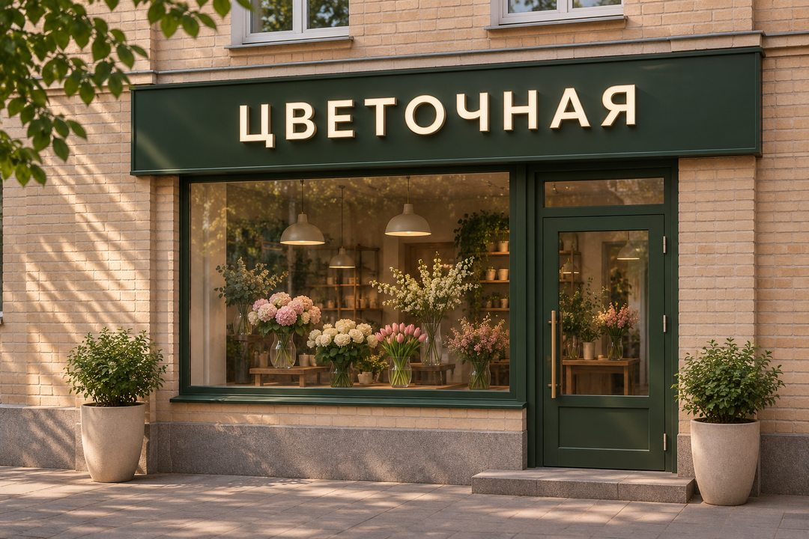

Описание товара или услуги
Обозначение у входа помогает понять, что предлагает точка. Для надписи «COFFEE TO GO» можно использовать «Кофе с собой», для «BEAUTY STUDIO» — «Студия красоты». Подберём точную формулировку по вашему профилю.
Борисоглебск · Поворино · Грибановский
Поможем обновить вывеску, надпись на стекле или лицевую панель. Разберём с вами, где бренд, а где описание услуги, подберём русский текст и покажем, как он поместится на фасаде.
Для первого расчёта перепишите надпись так, как она выглядит сейчас. Фото можно передать позже.

С 1 марта 2026 года статья 10.1 Закона РФ «О защите прав потребителей» устанавливает требования к публичной информации для потребителей, которая размещается, например, на вывесках, указателях и табличках. Такая информация нерекламного характера должна быть на русском языке. Дополнительный перевод допускается при идентичном содержании и равнозначном размещении и оформлении.
Для рекламных сообщений действуют также нормы о рекламе. При выборе места и способа крепления уточняем требования к конкретному фасаду и необходимость согласований.
Разъяснения Роспотребнадзора о языке информации для покупателей и ФАС России о разграничении вывески и рекламы.
После согласования текста подберём способ переделки с учётом длины русской строки и состояния основы.
При первом обращении достаточно города, нынешней надписи и пожеланий к русской версии. Отдельно отметьте обозначения, которые хотите сохранить.
Фото и файлы можно передать при обсуждении заказа.
Цена зависит от длины надписи, материалов, состояния основы и доступа к месту монтажа. Для нескольких адресов рассчитаем общий макет и работы по каждому объекту.
Обсудить мой вариантИногда достаточно заменить плёнку, буквы или панель. После оценки состояния основания и размеров новой строки предложим подходящее исполнение.
Для публичной информации, подпадающей под статью 10.1, возможен дополнительный иностранный текст при соблюдении требований к идентичности содержания и равнозначности оформления. Для фирменных наименований и знаков предусмотрены исключения.
Укажите, сколько адресов в Борисоглебске, Поворино и Грибановском. Согласуем общую формулировку и покажем её на фасаде каждой точки.
Укажите город и оставьте телефон. Менеджер уточнит задачу и подготовит расчёт для вашей организации. Если нужно коммерческое предложение, укажите это в заявке.